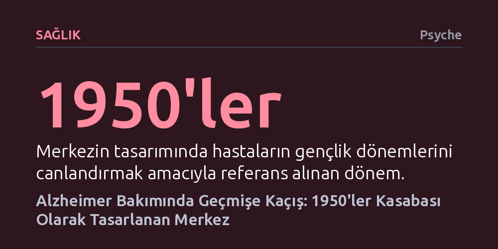

SAGLIK · Psyche · 2026-09-09
Kaliforniya'daki Town Square, Alzheimer hastalarını kafa karıştırıcı bugüne zorlamak yerine 1950'ler dekoruyla geçmişin tanıdık ortamına daldırıyor. Anı terapisiyle inşa edilen bu yapay kasaba, hastaların ve hasta yakınlarının yaşadığı zorlukları hafifletmeyi hedefliyor.
Demans bakımında hastaları bugünün gerçekliğine uyum sağlamaya zorlamak yerine, zihinlerinde hâlâ taze olan geçmiş dönem atmosferiyle kaygıyı azaltmanın pratik yollarını gösteriyor.

Kaliforniya'nın Chula Vista kentinde sıradan bir sanayi deposunun içine adım atanlar, kendilerini bir anda 1950'li ve 60'lı yılların tipik bir Amerikan kasabasında buluyor. Klasik filmlerin oynatıldığı bir sinema salonu, dönemin tasarımını taşıyan nostaljik lokantalar ve vitrinler bu mekânın ayrılmaz birer parçası. Ancak burası nostalji peşindeki turistler için inşa edilmiş bir eğlence parkı değil; Alzheimer ve demans hastalarının günlerini güvenle geçirdiği özel bir gündüz bakım evi.
Glenner Alzheimer Merkezleri'nin yöneticisi Scott Tarde'ın girişimiyle hayata geçirilen "Town Square" adlı proje, kapalı bir alanda devasa bir geçmiş simülasyonu sunuyor. Temel amaç, demans hastalarının dış dünyada karşılaştıkları karmaşık, anlaşılması güç ve yabancılaştırıcı uyaranlardan uzaklaşarak kendilerini en güvende hissettikleri dönemin içinde vakit geçirmelerini sağlamak.
Demans ve Alzheimer hastalarıyla iletişim kurarken en sık karşılaşılan çıkmazlardan biri, onları sürekli olarak şimdiki zamana ve bugünün gerçeklerine çekme çabasıdır. Hastanın nerede olduğunu veya hangi yılda yaşadığını hatırlamaması, sürekli bir düzeltilme ve yetersizlik hissi yaratır. Bu durum hem hasta için derin bir kaygı ve huzursuzluk kaynağıdır hem de bakım veren yakınları için yıpratıcı bir mücadeleye dönüşür.
Town Square tam da bu noktada devreye giren anı terapisi (reminiscence therapy) ilkelerine dayanıyor. Hastayı içinde bocaladığı yabancı bugüne adapte etmeye zorlamak yerine, uzun süreli belleğinde hâlâ canlı kalan gençlik yıllarının tanıdık atmosferine götürüyor. Tanıdık bir melodi, eski bir film afişi ya da döneme uygun bir tezgâh, hastanın kaybolan kontrol hissini ve benliğini geçici de olsa yeniden uyandırabiliyor.
Yönetmen Josh Izenberg, Town Square'in 2018 yılındaki inşaat aşamasından kapılarını açtığı ilk günlere kadar geçen süreci bir belgeselle kayıt altına alıyor. Merkezin benimsediği felsefenin ilk kez sınandığı bu dönemde film, mekânı kullanan ilk ailelerin deneyimlerine ve gündelik yaşam mücadelelerine yakından odaklanıyor.
Belgesel, anı terapisinin hastaların tedirginliğini ve çektiği sıkıntıları azaltmadaki potansiyelini gözler önüne sererken kolaycı bir iyimserlik tuzaklarına da düşmüyor. Alzheimer hastalığının hem hastalar hem de onların bakımını üstlenen aileler için yarattığı derin güçlükleri ve duygusal ağırlığı tüm dürüstlüğüyle yansıtıyor.